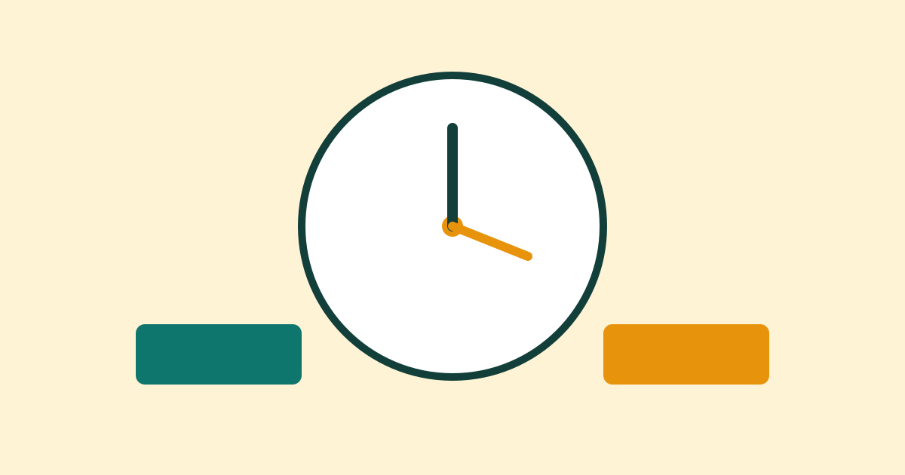

How to Study in Short Focused Sessions

Long study hours do not always mean good learning. Many people sit at a desk for hours, read the same page again and again, and still remember very little. Short focused sessions work better because they give your mind a clear task, a clear end point, and time to rest. This guide explains how to plan a short session, stay focused during it, and use breaks well, so you can learn more in less time.
Why Short Sessions Work Better
Attention is a limited resource. When you try to focus for too long without a break, your mind starts to wander, you read without understanding, and small distractions become harder to resist. A short session protects your attention by keeping the work period small and manageable. You know you only need to focus for a set time, so it is easier to begin and easier to stay on task.
Short sessions also make progress visible. Instead of a vague goal such as “study biology,” you finish one clear piece of work, such as reading one chapter section and writing five notes from it. That finished feeling builds confidence and makes the next session easier to start. Over days and weeks, several short sessions add up to steady, reliable learning.
Set Up Your Session Before You Start
Good preparation takes only a few minutes and saves much more time later. First, choose one clear goal for the session. Write it in one sentence, for example: “Understand the three causes of the event and explain each in my own words.” A single goal stops you from jumping between topics and finishing none of them.
Next, gather everything you need before you begin: your book or notes, a pen, paper, and water. Put your phone in another room or switch it to silent and out of sight if you can. Clear the desk of items that are not part of the task. When the session starts, you should not need to stand up to find something, because each small interruption breaks your focus.
Run a Focused Session Step by Step
Choose a session length that suits you, often between twenty-five and fifty minutes. Beginners may start with twenty-five minutes, while experienced learners may prefer forty or fifty. Set a timer, then work only on your chosen goal until the timer ends. If a new idea or unrelated task comes to mind, write it quickly on a scrap paper and return to your work. This keeps the idea safe without pulling you away.
Study actively, not passively. Instead of only reading, try to explain ideas in your own words, answer a practice question, draw a simple diagram, or write a short summary from memory. Active work feels harder at first, but it helps you notice what you do not yet understand. When you find a gap, mark it clearly and return to that point in your next session.
Take Breaks That Actually Refresh You
A break is not a reward for finishing early; it is part of the study method. When the timer ends, stop work and take a break of five to ten minutes. Stand up, stretch, walk around, drink water, or look out of the window. Movement and a change of view help your mind reset for the next session.
Avoid breaks that pull you into a long distraction, such as starting a video series or scrolling through endless posts. These activities make it hard to return, and they often leave you more tired than before. A short, calm break is enough. When break time ends, start the next session promptly, even if you do not feel fully ready. Starting is often the hardest part, and focus usually follows after a few minutes.
Review and Plan the Next Session
At the end of your study time, spend three to five minutes reviewing what you learned. Look at your notes and try to recall the main points without reading them first. Write down one thing you understood well and one thing you still need to practise. This quick review strengthens memory and gives your next session a clear starting point.
Then decide when the next session will happen and what it will cover. A simple plan such as “tomorrow at six, practise the two difficult examples” removes the need to decide later. You are more likely to keep a plan that is written down and tied to a time, rather than a general intention to study “sometime.”
Common Mistakes
One common mistake is setting a goal that is too large for one session, such as finishing a whole book. When the goal is impossible, you feel behind even after good work. Keep each goal small enough to finish in one session. Another mistake is studying with music, messages, and videos in the background. Even small distractions reduce the quality of learning, because your mind keeps switching tasks.
Many learners also skip breaks or skip the final review. Without breaks, focus falls and later sessions become less useful. Without a review, you may forget key points before the next session. Finally, do not judge a session only by the number of pages read. Understanding, recall, and the ability to explain an idea matter much more than pages completed.
Frequently Asked Questions
How long should a focused study session be?
Twenty-five to fifty minutes works well for most people. Start shorter if you are new to this method, then increase the length slowly as your focus improves. The best length is one you can repeat regularly without feeling exhausted.
How many sessions should I do in a day?
Two to four focused sessions are enough for many learners, depending on your schedule. Quality matters more than quantity. It is better to complete three focused sessions than to sit for six unfocused hours.
What should I do if I lose focus in the middle of a session?
Pause for a moment, take a slow breath, and return to the last point you understood. If you are still stuck after a few minutes, write down the problem and move to a smaller part of the task. You can return to the difficult part after a break.
Can I use this method for reading and revision?
Yes. Use short sessions for reading, note-taking, practice questions, and revision. For revision, spend part of the session recalling ideas from memory before checking your notes. This makes revision more active and more useful.
Conclusion
Short focused sessions turn study into a clear, repeatable habit. Choose one goal, prepare your space, work actively for a set time, take a real break, and end with a quick review. You do not need perfect conditions or long hours. You need a simple plan, repeated often, and that steady rhythm is what builds lasting learning.